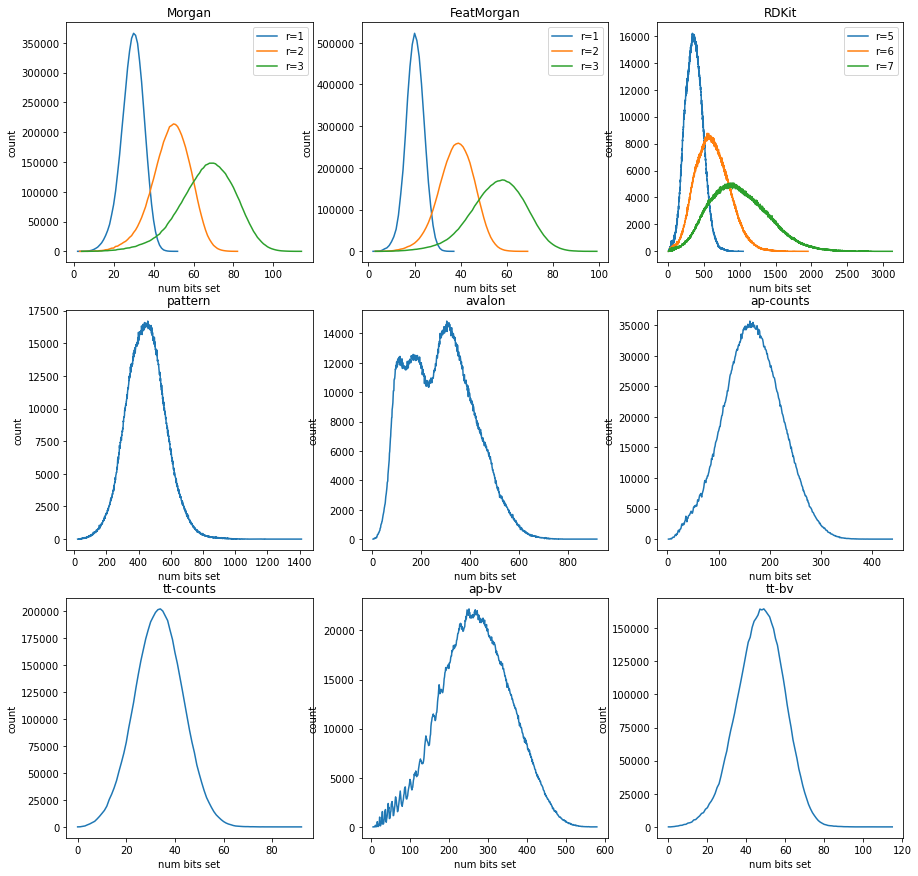
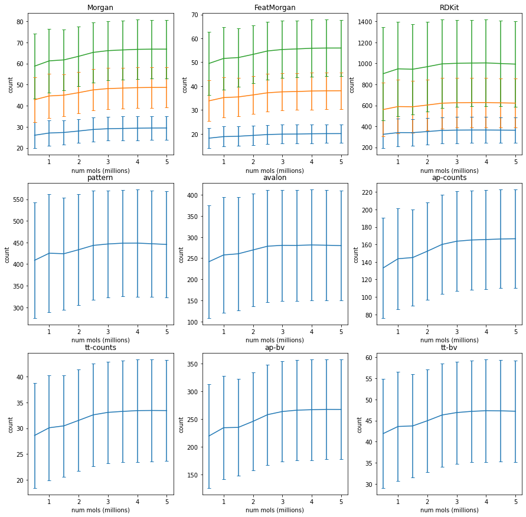

I have done similar analysis for other fingerprint types, but it looks like I didn’t post that (at least I can’t find it if I did). It’s useful to do this because, as we’ll see, the different fingerprint types have very different numbers of bits set for typical molecules.
Here’s the summary of the mean and standard deviation of the number of bits set, from an analysis of 5 million molecules with less than 50 heavy atoms extracted from ZINC:
Fingerprint
Type
Mean num_bits
SD num_bits
Morgan1
sparse
29.4
5.6
Morgan2
sparse
48.7
9.6
Morgan3
sparse
66.8
13.8
FeatMorgan1
sparse
20.1
3.9
FeatMorgan2
sparse
38.1
7.7
FeatMorgan3
sparse
56.0
11.8
RDKit5
bitvect
363
122
RDKit6
bitvect
621
233
RDKit7
bitvect
993
406
pattern
bitvect
446
122
avalon
bitvect
280
130
atom pairs
sparse
167
56
TT
sparse
33.4
9.8
atom pairs
bitvect
267
90
TT
bitvect
47.2
12.0
The bit vector fingerprints were all 4096 bits long.
Populating the interactive namespace from numpy and matplotlib
2021.09.1pre
Tue Jul 6 04:58:28 2021
/home/glandrum/miniconda3/lib/python3.7/site-packages/IPython/core/magics/pylab.py:160: UserWarning: pylab import has clobbered these variables: ['copy', 'random']
`%matplotlib` prevents importing * from pylab and numpy
"\n`%matplotlib` prevents importing * from pylab and numpy"
Loop over the molecules, skip anything with more than 50 atoms, and build fingerprints for all the others.
The fingerprints I generate for this analysis are: - Sparse Morgan with radii 1, 2, and 3 - Sparse FeatureMorgan with radii 1, 2, and 3 - RDKit BitVect with maxPath 5, 6, and 7 - Pattern BitVect - Avalon BitVect - Sparse Atom Pairs - Sparse Topological Torsions - Atom Pair BitVect - Topological Torsion BitVect
All of the BitVect fingerprints are 4096 bits long
import copyhistoryf = gzip.open('../data/fp_bit_counts.history.pkl.gz','wb+')counts=defaultdict(Counter)t1 = time.time()with gzip.open(filen,'rb') as inf: i =0 ms = []while1:try: m,nm = pickle.load(inf)exceptEOFError:breakifnot m or m.GetNumHeavyAtoms()>50: continue ms.append(m) i+=1iflen(ms)>=10000:for v in1,2,3: cnts = dview.map_sync(lambda x,v=v:len(rdMolDescriptors.GetMorganFingerprint(x,v).GetNonzeroElements()), ms)for obc in cnts: counts[('Morgan',v)][obc]+=1for v in1,2,3: cnts = dview.map_sync(lambda x,v=v:len(rdMolDescriptors.GetMorganFingerprint(x,v,useFeatures=True).GetNonzeroElements()), ms)for obc in cnts: counts[('FeatMorgan',v)][obc]+=1for v in5,6,7: cnts = dview.map_sync(lambda x,v=v:Chem.RDKFingerprint(x,maxPath=v,fpSize=4096).GetNumOnBits(), ms)for obc in cnts: counts[('RDKit',v)][obc]+=1 cnts = dview.map_sync(lambda x:Chem.PatternFingerprint(x,fpSize=4096).GetNumOnBits(), ms)for obc in cnts: counts[('pattern',-1)][obc]+=1 cnts = dview.map_sync(lambda x:pyAvalonTools.GetAvalonFP(x,nBits=4096).GetNumOnBits(), ms)for obc in cnts: counts[('avalon',-1)][obc]+=1 cnts = dview.map_sync(lambda x:len(rdMolDescriptors.GetAtomPairFingerprint(x).GetNonzeroElements()), ms)for obc in cnts: counts[('ap-counts',-1)][obc]+=1 cnts = dview.map_sync(lambda x:len(rdMolDescriptors.GetTopologicalTorsionFingerprint(x).GetNonzeroElements()), ms)for obc in cnts: counts[('tt-counts',-1)][obc]+=1 cnts = dview.map_sync(lambda x:rdMolDescriptors.GetHashedAtomPairFingerprintAsBitVect(x,nBits=4096).GetNumOnBits(), ms)for obc in cnts: counts[('ap-bv',-1)][obc]+=1 cnts = dview.map_sync(lambda x:rdMolDescriptors.GetHashedTopologicalTorsionFingerprintAsBitVect(x,nBits=4096).GetNumOnBits(), ms)for obc in cnts: counts[('tt-bv',-1)][obc]+=1 ms = []ifnot i%50000: t2 = time.time()print("Done %d in %.2f sec"%(i,t2-t1))ifnot i%500000: pickle.dump(dict(counts),historyf)if i>=5000000:break
Done 50000 in 38.63 sec
Done 100000 in 77.02 sec
Done 150000 in 115.17 sec
Done 200000 in 163.61 sec
Done 250000 in 215.39 sec
Done 300000 in 267.96 sec
Done 350000 in 319.74 sec
Done 400000 in 373.11 sec
Done 450000 in 415.37 sec
Done 500000 in 468.50 sec
Done 550000 in 526.23 sec
Done 600000 in 570.65 sec
Done 650000 in 622.83 sec
Done 700000 in 674.11 sec
Done 750000 in 724.71 sec
Done 800000 in 775.76 sec
Done 850000 in 823.44 sec
Done 900000 in 873.37 sec
Done 950000 in 922.91 sec
Done 1000000 in 971.03 sec
Done 1050000 in 1019.84 sec
Done 1100000 in 1068.24 sec
Done 1150000 in 1116.11 sec
Done 1200000 in 1164.39 sec
Done 1250000 in 1211.31 sec
Done 1300000 in 1255.67 sec
Done 1350000 in 1306.25 sec
Done 1400000 in 1356.04 sec
Done 1450000 in 1402.95 sec
Done 1500000 in 1453.38 sec
Done 1550000 in 1500.31 sec
Done 1600000 in 1546.90 sec
Done 1650000 in 1593.48 sec
Done 1700000 in 1640.38 sec
Done 1750000 in 1696.32 sec
Done 1800000 in 1750.83 sec
Done 1850000 in 1810.42 sec
Done 1900000 in 1868.12 sec
Done 1950000 in 1926.07 sec
Done 2000000 in 1983.37 sec
Done 2050000 in 2043.56 sec
Done 2100000 in 2102.81 sec
Done 2150000 in 2160.67 sec
Done 2200000 in 2218.30 sec
Done 2250000 in 2272.73 sec
Done 2300000 in 2323.77 sec
Done 2350000 in 2375.39 sec
Done 2400000 in 2427.04 sec
Done 2450000 in 2481.36 sec
Done 2500000 in 2536.57 sec
Done 2550000 in 2591.71 sec
Done 2600000 in 2644.06 sec
Done 2650000 in 2698.32 sec
Done 2700000 in 2752.86 sec
Done 2750000 in 2805.41 sec
Done 2800000 in 2856.95 sec
Done 2850000 in 2909.60 sec
Done 2900000 in 2965.05 sec
Done 2950000 in 3021.72 sec
Done 3000000 in 3073.35 sec
Done 3050000 in 3127.90 sec
Done 3100000 in 3177.67 sec
Done 3150000 in 3234.92 sec
Done 3200000 in 3288.20 sec
Done 3250000 in 3341.28 sec
Done 3300000 in 3393.97 sec
Done 3350000 in 3446.92 sec
Done 3400000 in 3499.45 sec
Done 3450000 in 3549.88 sec
Done 3500000 in 3601.67 sec
Done 3550000 in 3653.41 sec
Done 3600000 in 3705.95 sec
Done 3650000 in 3759.37 sec
Done 3700000 in 3810.11 sec
Done 3750000 in 3861.68 sec
Done 3800000 in 3912.28 sec
Done 3850000 in 3965.28 sec
Done 3900000 in 4022.67 sec
Done 3950000 in 4077.32 sec
Done 4000000 in 4129.91 sec
Done 4050000 in 4185.33 sec
Done 4100000 in 4240.67 sec
Done 4150000 in 4287.86 sec
Done 4200000 in 4340.04 sec
Done 4250000 in 4391.57 sec
Done 4300000 in 4443.67 sec
Done 4350000 in 4493.96 sec
Done 4400000 in 4545.53 sec
Done 4450000 in 4592.16 sec
Done 4500000 in 4640.05 sec
Done 4550000 in 4687.30 sec
Done 4600000 in 4733.79 sec
Done 4650000 in 4780.85 sec
Done 4700000 in 4828.29 sec
Done 4750000 in 4878.40 sec
Done 4800000 in 4927.55 sec
Done 4850000 in 4984.36 sec
Done 4900000 in 5042.20 sec
Done 4950000 in 5101.82 sec
Done 5000000 in 5154.32 sec
Now plot the distributions of the number of bits set
morgan_ks = [x for x in counts.keys() if x[0] =='Morgan']featmorgan_ks = [x for x in counts.keys() if x[0] =='FeatMorgan']rdkit_ks = [x for x in counts.keys() if x[0] =='RDKit']figure(figsize=(15,15))pidx=1subplot(3,3,pidx)for n,r in morgan_ks: cnts =sorted(counts[(n,r)].items()) plot([x for x,y in cnts],[y for x,y in cnts],label=f"r={r}")_=title("Morgan")_=xlabel("num bits set")_=ylabel("count")_=legend()pidx=2subplot(3,3,pidx)for n,r in featmorgan_ks: cnts =sorted(counts[(n,r)].items()) plot([x for x,y in cnts],[y for x,y in cnts],label=f"r={r}")_=title("FeatMorgan")_=xlabel("num bits set")_=ylabel("count")_=legend()pidx=3subplot(3,3,pidx)for n,r in rdkit_ks: cnts =sorted(counts[(n,r)].items()) plot([x for x,y in cnts],[y for x,y in cnts],label=f"r={r}")_=title("RDKit")_=xlabel("num bits set")_=ylabel("count")_=legend()for k in counts.keys():if k[0] in ('Morgan','FeatMorgan','RDKit'):continue pidx+=1 subplot(3,3,pidx) cnts =sorted(counts[k].items()) plot([x for x,y in cnts],[y for x,y in cnts]) _=title(k[0]) _=xlabel("num bits set") _=ylabel("count")

The avalon FP curve has an interesting shape
for k,cnts in counts.items(): accum =0 denom =0for cnt,num in cnts.items(): accum += cnt*num denom += num mean = accum/denom dev =0for cnt,num in cnts.items(): dev += num*(cnt-mean)**2 dev /= (denom-1) dev = dev**0.5 label = k[0]if k[1]!=-1: label +=str(k[1])print(label,'\t%.1f'%mean,'%.1f'%dev)
I did 5 million examples, which took a while (about 1.5 hours with 6 worker processes on my PC). Could I have analyzed less and gotten to the same results? Did the means converge? If so, how quickly?
historyf = gzip.open('../data/fp_bit_counts.history.pkl.gz','rb')means = defaultdict(list)devs = defaultdict(list)nmols = []while1:try: lcounts = pickle.load(historyf)exceptEOFError:breakfor k,cnts in lcounts.items(): accum =0 denom =0for cnt,num in cnts.items(): accum += cnt*num denom += num mean = accum/denom dev =0for cnt,num in cnts.items(): dev += num*(cnt-mean)**2 dev /= (denom-1) dev = dev**0.5if denom notin nmols: nmols.append(denom) means[k].append(mean) devs[k].append(dev) label = k[0]if k[1]!=-1: label +=str(k[1])print(denom,label,'\t%.1f'%mean,'%.1f'%dev)
morgan_ks = [x for x in counts.keys() if x[0] =='Morgan']featmorgan_ks = [x for x in counts.keys() if x[0] =='FeatMorgan']rdkit_ks = [x for x in counts.keys() if x[0] =='RDKit']figure(figsize=(15,15))nmols2 = [x/1000000for x in nmols]pidx=1subplot(3,3,pidx)for n,r in morgan_ks: lmeans = means[(n,r)] ldevs = devs[(n,r)] errorbar(nmols2,lmeans,yerr=ldevs,capsize=3)_=title("Morgan")_=xlabel("num mols (millions)")_=ylabel("count")#_=legend()pidx=2subplot(3,3,pidx)for n,r in featmorgan_ks: lmeans = means[(n,r)] ldevs = devs[(n,r)] errorbar(nmols2,lmeans,yerr=ldevs,capsize=3)_=title("FeatMorgan")_=xlabel("num mols (millions)")_=ylabel("count")#_=legend()pidx=3subplot(3,3,pidx)for n,r in rdkit_ks: lmeans = means[(n,r)] ldevs = devs[(n,r)] errorbar(nmols2,lmeans,yerr=ldevs,capsize=3)_=title("RDKit")_=xlabel("num mols (millions)")_=ylabel("count")#_=legend()for k in counts.keys():if k[0] in ('Morgan','FeatMorgan','RDKit'):continue pidx+=1 subplot(3,3,pidx) lmeans = means[k] ldevs = devs[k] errorbar(nmols2,lmeans,yerr=ldevs,capsize=3) _=title(k[0]) _=xlabel("num mols (millions)") _=ylabel("count")

Looks like we would have been fine with 3 million molecules.